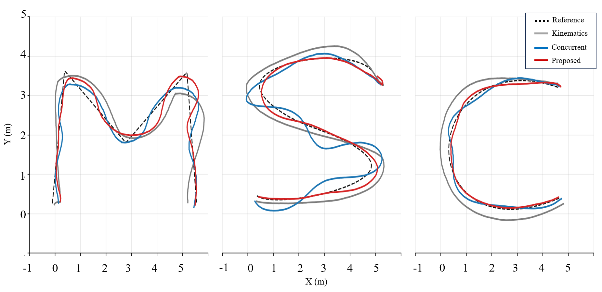
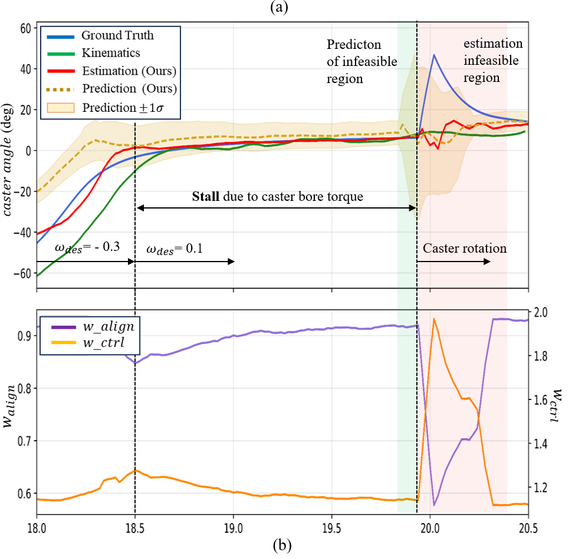
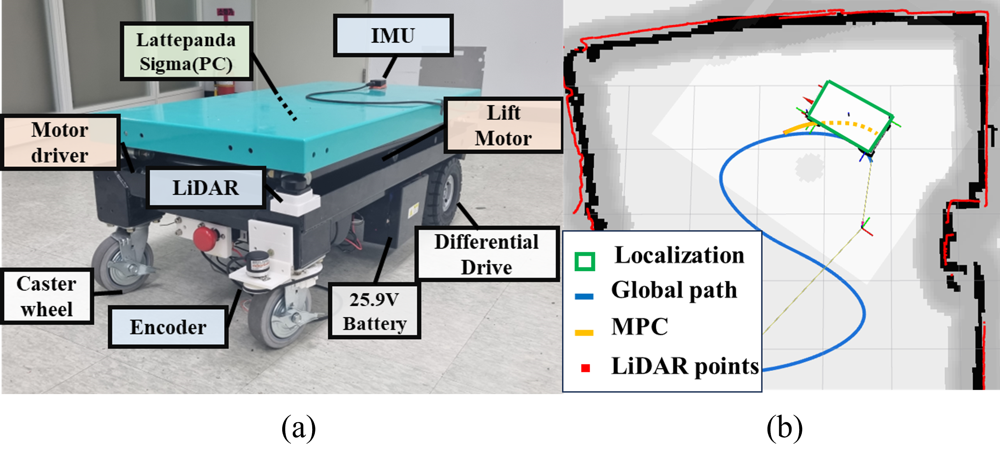
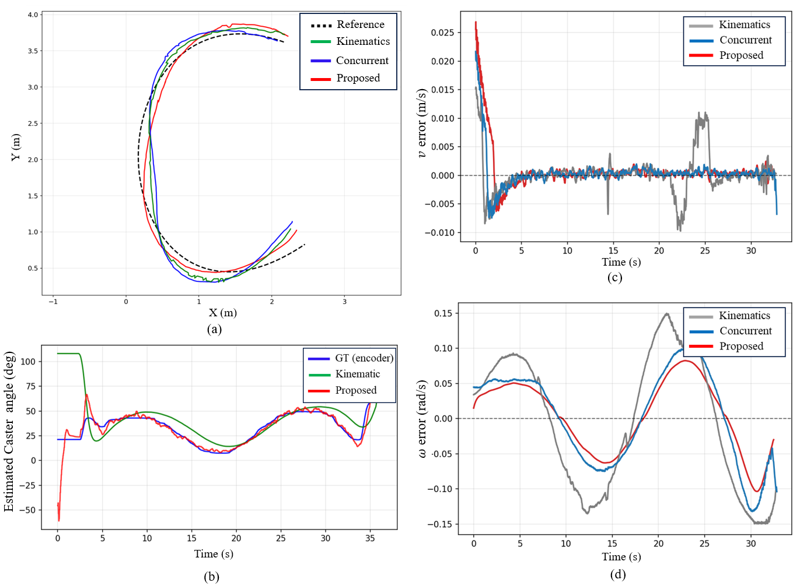

Integrated Hierarchy
Planning, latent caster-state inference, short-horizon prediction, and wheel-level execution are coupled in one control loop rather than treated as independent modules.
AMR · IROS 2026
Uncertainty-aware NMPC and an RL-based execution layer for caster-equipped industrial mobile robots

Passive caster wheels are mechanically simple and well suited to high-payload industrial AMRs, but their swivel direction is not directly actuated. During low-speed turns, in-place rotations, high-curvature cornering, and forward–reverse transitions, caster misalignment produces lateral scrub forces and resistive reaction torque. The result is a planning–execution gap: a velocity command that is feasible in the planner may be difficult for the drivetrain to realize physically.
Existing solutions typically handle this problem at only one level. Low-level compensation reacts after a command has already been planned, whereas caster-aware planning can become unreliable when caster-state estimates are delayed or uncertain. MSC addresses both issues jointly by coordinating uncertainty-aware planning with contact-consistent low-level execution.
Planning, latent caster-state inference, short-horizon prediction, and wheel-level execution are coupled in one control loop rather than treated as independent modules.
Predictive caster uncertainty adjusts the caster-alignment cost and input regularization over the NMPC horizon, reducing reliance on uncertain state predictions.
A recurrent actor–critic policy transforms high-level linear and angular velocity references into dynamically executable left/right wheel-speed targets.
The Isaac Sim model matches the differential-drive and passive-caster configuration of the real robot. Evaluation is performed on three distinct M/S/C trajectories containing low-speed turns, in-place rotation, and high-curvature segments. The comparison isolates both levels of the hierarchy:

The learned predictor outputs both the expected future caster trajectory and its variance. During rapid caster swing, standstill-to-motion transitions, or other singularity-prone conditions, the predicted risk increases. CU-MPC then reduces the influence of the caster-alignment term and strengthens control regularization, preventing uncertain caster estimates from driving abrupt or torque-sensitive plans.

Compared with the kinematics-based estimator, the learned estimator reduced caster-angle RMSE from 0.301 to 0.029 rad on the M path, from 0.289 to 0.065 rad on the S path, and from 0.390 to 0.064 rad on the C path.
Real-robot validation uses a differential-drive AMR with two freely swiveling caster wheels. Caster encoders provide ground truth only for evaluation. The onboard system includes a LattePanda Sigma computer, motor drivers, a 2D LiDAR, wheel encoders, and an MTi-630R IMU. The navigation software runs on ROS 2 Humble and Nav2.
A 2D map is generated offline using a SLAMTEC S3 LiDAR and Cartographer. During operation, wheel-encoder and IMU measurements are fused by an EKF, and AMCL refines localization against the map. This setup evaluates whether the learned execution layer remains effective with filtering delay, friction variation, micro-slip, and real caster contact effects.


The improved command realization requires greater actuation effort: mean current increased to 0.9731 A. This tradeoff is consistent with the controller applying the additional effort needed to follow the requested motion under caster-induced resistance.
Caster effects are not only a disturbance-rejection problem and not only a planning problem. The experiments indicate that the planning–execution gap is reduced most reliably when uncertainty-aware planning and contact-consistent command realization are designed together. MSC therefore treats caster-state uncertainty as information shared across the hierarchy rather than an isolated estimation output.
J. Park, J. Lee, J. Lim, K. H. Choi, and K.-S. Kim, IEEE/RSJ International Conference on Intelligent Robots and Systems (IROS), 2026.